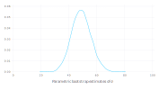
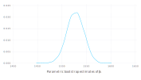
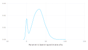
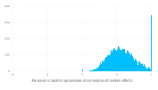

Parametric bootstrap for linear mixed-effects models
Julia is well-suited to implementing bootstrapping and other simulation-based methods for statistical models. The parametricbootstrap function in the MixedModels package provides an efficient parametric bootstrap for linear mixed-effects models.
MixedModels.parametricbootstrap — Functionparametricbootstrap(rng::AbstractRNG, nsamp::Integer, m::LinearMixedModel;
β = coef(m), σ = m.σ, θ = m.θ, use_threads=false)
parametricbootstrap(nsamp::Integer, m::LinearMixedModel;
β = coef(m), σ = m.σ, θ = m.θ, use_threads=false)Perform nsamp parametric bootstrap replication fits of m, returning a MixedModelBootstrap.
The default random number generator is Random.GLOBAL_RNG.
Named Arguments
β, σ, and θ are the values of m's parameters for simulating the responses. use_threads determines whether or not to use thread-based parallelism.
The parametric bootstrap
Bootstrapping is a family of procedures for generating sample values of a statistic, allowing for visualization of the distribution of the statistic or for inference from this sample of values.
A parametric bootstrap is used with a parametric model, m, that has been fit to data. The procedure is to simulate n response vectors from m using the estimated parameter values and refit m to these responses in turn, accumulating the statistics of interest at each iteration.
The parameters of a LinearMixedModel object are the fixed-effects parameters, β, the standard deviation, σ, of the per-observation noise, and the covariance parameter, θ, that defines the variance-covariance matrices of the random effects.
For example, a simple linear mixed-effects model for the Dyestuff data in the lme4 package for R is fit by
julia> using DataFrames, Gadfly, MixedModels, Random
julia> dyestuff = MixedModels.dataset(:dyestuff)
30×2 DataFrames.DataFrame
│ Row │ batch │ yield │
│ │ String │ Int16 │
├─────┼────────┼───────┤
│ 1 │ A │ 1545 │
│ 2 │ A │ 1440 │
│ 3 │ A │ 1440 │
│ 4 │ A │ 1520 │
│ 5 │ A │ 1580 │
│ 6 │ B │ 1540 │
│ 7 │ B │ 1555 │
⋮
│ 23 │ E │ 1515 │
│ 24 │ E │ 1635 │
│ 25 │ E │ 1625 │
│ 26 │ F │ 1520 │
│ 27 │ F │ 1455 │
│ 28 │ F │ 1450 │
│ 29 │ F │ 1480 │
│ 30 │ F │ 1445 │
julia> m1 = fit(MixedModel, @formula(yield ~ 1 + (1 | batch)), dyestuff)
Linear mixed model fit by maximum likelihood
yield ~ 1 + (1 | batch)
logLik -2 logLik AIC BIC
-163.66353 327.32706 333.32706 337.53065
Variance components:
Column Variance Std.Dev.
batch (Intercept) 1388.3333 37.260345
Residual 2451.2500 49.510100
Number of obs: 30; levels of grouping factors: 6
Fixed-effects parameters:
──────────────────────────────────────────────────
Estimate Std.Error z value P(>|z|)
──────────────────────────────────────────────────
(Intercept) 1527.5 17.6946 86.33 <1e-99
──────────────────────────────────────────────────
To bootstrap the model parameters, first initialize a random number generator
julia> const rng = MersenneTwister(1234321);
then create a bootstrap sample
julia> samp = parametricbootstrap(rng, 10_000, m1);
julia> propertynames(samp)
7-element Array{Symbol,1}:
:model
:objective
:σ
:β
:θ
:σs
:σρs
As shown above, the sample has several named properties, which allow for convenient extraction of information. For example, a density plot of the estimates of σ, the residual standard deviation, can be created as
plot(x=samp.σ, Geom.density, Guide.xlabel("Parametric bootstrap estimates of σ"))
For the estimates of the intercept parameter, the getproperty extractor must be used
plot(x = first.(samp.β), Geom.density, Guide.xlabel("Parametric bootstrap estimates of β₁"))
The σs property contains the estimates of the standard deviation of the random effects in a hierarchical format.
julia> typeof(samp.σs)
NamedTuple{(:batch,),Tuple{Array{NamedTuple{(Symbol("(Intercept)"),),Tuple{Float64}},1}}}
This is to allow for random effects associated with more than one grouping factor. If we only have one grouping factor for random effects, which is the case here, we can use the first extractor, as in
julia> first(samp.σs)
10000-element Array{NamedTuple{(Symbol("(Intercept)"),),Tuple{Float64}},1}:
((Intercept) = 14.31202440021031,)
((Intercept) = 25.567322049075496,)
((Intercept) = 21.76223553106598,)
((Intercept) = 41.05589492574884,)
((Intercept) = 19.18021885057642,)
((Intercept) = 49.18319132233348,)
((Intercept) = 46.711965099114124,)
((Intercept) = 37.636680075523266,)
((Intercept) = 15.125683728901562,)
((Intercept) = 0.0,)
⋮
((Intercept) = 0.0,)
((Intercept) = 35.47993724363591,)
((Intercept) = 85.6889420619044,)
((Intercept) = 52.453848318538654,)
((Intercept) = 13.977380127035849,)
((Intercept) = 56.19821452821661,)
((Intercept) = 17.3300825173626,)
((Intercept) = 23.634457239496463,)
((Intercept) = 23.999614688511368,)
or, to carry this one step further,
plot(x=first.(first(samp.σs)), Geom.density,
Guide.xlabel("Parametric bootstrap estimates of σ₁"))
Notice that this density plot has a spike, or mode, at zero. Although this mode appears to be diffuse, this is an artifact of the way that density plots are created. In fact, it is a pulse, as can be seen from a histogram.
plot(x=first.(first(samp.σs)), Geom.histogram,
Guide.xlabel("Parametric bootstrap estimates of σ₁"))
A value of zero for the standard deviation of the random effects is an example of a singular covariance. It is easy to detect the singularity in the case of a scalar random-effects term. However, it is not as straightforward to detect singularity in vector-valued random-effects terms.
For example, if we bootstrap a model fit to the sleepstudy data
julia> sleepstudy = MixedModels.dataset(:sleepstudy)
180×3 DataFrames.DataFrame
│ Row │ subj │ days │ reaction │
│ │ String │ Int8 │ Float64 │
├─────┼────────┼──────┼──────────┤
│ 1 │ S308 │ 0 │ 249.56 │
│ 2 │ S308 │ 1 │ 258.705 │
│ 3 │ S308 │ 2 │ 250.801 │
│ 4 │ S308 │ 3 │ 321.44 │
│ 5 │ S308 │ 4 │ 356.852 │
│ 6 │ S308 │ 5 │ 414.69 │
│ 7 │ S308 │ 6 │ 382.204 │
⋮
│ 173 │ S372 │ 2 │ 297.597 │
│ 174 │ S372 │ 3 │ 310.632 │
│ 175 │ S372 │ 4 │ 287.173 │
│ 176 │ S372 │ 5 │ 329.608 │
│ 177 │ S372 │ 6 │ 334.482 │
│ 178 │ S372 │ 7 │ 343.22 │
│ 179 │ S372 │ 8 │ 369.142 │
│ 180 │ S372 │ 9 │ 364.124 │
julia> m2 = fit(
MixedModel,
@formula(reaction ~ 1+days+(1+days|subj)),
sleepstudy,
)
Linear mixed model fit by maximum likelihood
reaction ~ 1 + days + (1 + days | subj)
logLik -2 logLik AIC BIC
-875.96967 1751.93934 1763.93934 1783.09709
Variance components:
Column Variance Std.Dev. Corr.
subj (Intercept) 565.51068 23.780469
days 32.68212 5.716828 0.08
Residual 654.94145 25.591824
Number of obs: 180; levels of grouping factors: 18
Fixed-effects parameters:
──────────────────────────────────────────────────
Estimate Std.Error z value P(>|z|)
──────────────────────────────────────────────────
(Intercept) 251.405 6.63226 37.91 <1e-99
days 10.4673 1.50224 6.97 <1e-11
──────────────────────────────────────────────────
julia> samp2 = parametricbootstrap(rng, 10_000, m2, use_threads=true);
the singularity can be exhibited as a standard deviation of zero or as a correlation of $\pm1$. The σρs property of the sample is a vector of named tuples
julia> σρ = first(samp2.σρs);
julia> typeof(σρ)
Array{NamedTuple{(:σ, :ρ),Tuple{NamedTuple{(Symbol("(Intercept)"), :days),Tuple{Float64,Float64}},Tuple{Float64}}},1}
where the first element of the tuple is itself a tuple of standard deviations and the second (also the last) element of the tuple is the correlation.
A histogram of the estimated correlations from the bootstrap sample has a spike at +1.
ρs = first.(last.(σρ))
plot(x = ρs, Geom.histogram,
Guide.xlabel("Parametric bootstrap samples of correlation of random effects"))
or, as a count,
julia> sum(ρs .≈ 1)
328
Close examination of the histogram shows a few values of -1.
julia> sum(ρs .≈ -1)
6
Furthermore there are even a few cases where the estimate of the standard deviation of the random effect for the intercept is zero.
julia> sum(first.(first.(first.(σρ))) .≈ 0)
5
There is a general condition to check for singularity of an estimated covariance matrix or matrices in a bootstrap sample. The parameter optimized in the estimation is θ, the relative covariance parameter. Some of the elements of this parameter vector must be non-negative and, when one of these components is approximately zero, one of the covariance matrices will be singular.
The boundary values are available as
julia> samp2.m.optsum.lowerbd
3-element Array{Float64,1}:
0.0
-Inf
0.0
so the check on singularity becomes
julia> sum(θ -> any(θ .≈ samp2.m.optsum.lowerbd), samp2.θ)
339
The issingular method for a LinearMixedModel object that tests if a parameter vector θ corresponds to a boundary or singular fit. The default value of θ is that from the model but another value can be given as the second argument.
This operation is encapsulated in a method for the issingular function.
julia> sum(issingular(samp2))
339